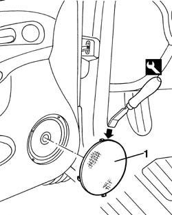
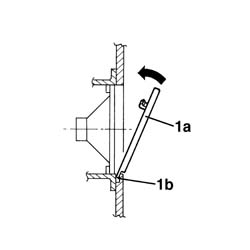

7005E22 l/h or r/h front door panel radio grille (one) - r+r
- Path
- Procedures > 70 FITTINGS > 7005 PASSENGER COMPARTMENT FRONT SIDE DOORS > 7005E front side door trim > 7005E22 l/h or r/h front door panel radio grille (one) - r+r
- Kind
- repair procedure (removal / refitting; the operation number is the code)
- Applies to
- all engines; all production periods
- Interactive page
- https://sloeber94.github.io/elrnDB-a156/en/#/3238605
Applies to: all engines; all production periods
 Removing
Removing
 Refitting
Refitting1. Remove the speaker grille using an appropriate tool. Insert the tool in the upper area, as illustrated in the diagram.
 | Name | Country |
|---|---|---|
1 | Scraper blade | 1.823.014.000 |

Applies to: all engines; all production periods
Refitting
RemovingCheck that the loudspeaker grille is undamaged and that the retainers are in good condition.
1. Fit the speaker grille (1a).
Insert the lower retainer (1b) in its housing and then engage the grille with the other retainers.

Topics that link to this page (28)
- 5505B11 front door wiring - r r
- 5570T90 front speaker - r r
- 5580T10 bose sound system front speaker (one), lh or rh - r r
- 7005A05 front side door water guard protection r r or arrange
- 7005A28 front side door limiter- repair or replace
- 7005C11 front side door outside handle r r
- 7005C15 front side door lock barrel (in handle) - r+r
- 7005C43 link connecting front side door barrels/catch - r+r
- 7005C51 front side door inner catch device - r+r for repair or replacement
- 7005C53 interior opening handle - r r
- 7005C55 front side door interior opening return device (with handle) - r+r for repair or replacement
- 7005C67 front side door safety catch link r r
- 7005D15 front side door descending window glass r r
- 7005D16 fixed window glass element - r r
- 7005D18 front side door descending window glass channel r r
- 7005D21 front door window front guide - r r
- 7005D25 front door window rear guide - r r
- 7005D30 front side descending window glass scraper (inner) r r
- 7005E08 front side door interior panel r r
- 7005E10 front side door inner panel - r r for replacement
- 7005E30 object pouch on one front side door r r
- 7005E39 grab-handle reinforcement - r r
- 7005E50 front side door pillar trim (one) lh or rh - r r
- 7005E91 One front door ANTI-BREAK IN PARTITION, left or right - R.R. with door panel removed
- 7005M21 front side door electrically operated window - r r
- 7005M25 front side door electrically operated window mechanism chech position and fastening
- 7005N21 front side door lock motor-lock assembley-r r
- 7205E36 Stripping FRONT SIDE DOOR